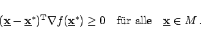

Inhalt Index DeskTop Bronstein

 Optimierung Nichtlineare Optimierung Spezielle nichtlineare Optimierungsaufgaben Konvexe Optimierung
Optimierung Nichtlineare Optimierung Spezielle nichtlineare Optimierungsaufgaben Konvexe Optimierung


Konvexe Aufgabe wird die Optimierungsaufgabe
genannt, wenn die Funktionen f und gi konvex sind. Insbesondere können f und gi lineare Funktionen sein. Für konvexe Aufgaben gilt:
|  | (18.43) |